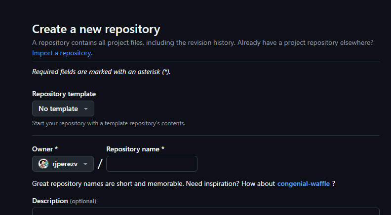
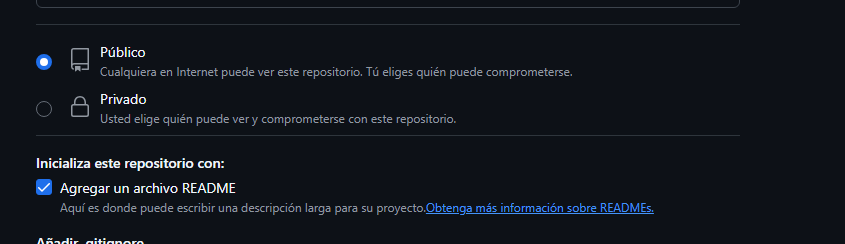
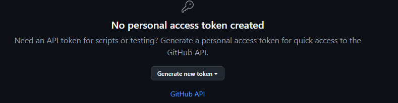

2 Guia de conectividad con GitHub
2.1 Configuración de GitHub
Ahora que tenemos algunas generaliddes sobre GitHub, su uso e importancia podemos comenzar a usarlo.
2.2 Crea una cuenta en GitHub
Puedes omitir algunos pasos si ya los tienes
Crea una cuenta en GitHub si aún no tienes aqui
2.3 Crear Nuevo Repositorio
Un repositorio de GitHub es como su carpeta en la nube. Puede almacenar archivos (datos, código fuente), ver los cambios históricos en estos archivos, abrir problemas, discutir cambios y mucho más. Las personas suelen crear un repositorio por proyecto.
La sección Owner ya tendrá el nombre de tu cuenta. Crea un nombre de repositorio. Comprueba si está configurado como Público para que sea de código abierto, y luego marca la casilla Add a README file. Finalmente, haz clic en Create repository.

Al crear tu repositorio puedes crear un archivo README, que es un documento de texto (normalmente llamado README.md) el cual contiene información importante sobre tu proyecto, como ¿qué hace?, ¿cómo usarlo?, ¿quién lo mantiene? y ¿cómo contribuir?. Es la primera cosa que ven los visitantes cuando entran a tu repositorio en GitHub, y ayuda a que otros entiendan tu proyecto fácilmente.
Puedes crear tu repositorio sin un README, o de modo privado segun desees manejar tu información.

Puedes explorar otras funciones de GitHub aqui
2.4 Configurar Git Localmente
Para evitar ingresar credenciales repetidamente:
Configura tu nombre y correo en Git ejecutando en la terminal:
{c++} git config --global user.name "Tu Nombre" git config --global user.email "tuemail@ejemplo.com"
2.5 Configura autenticación
Si el servidor tiene que acceder a repositorios en una o más organizaciones, puede usar GitHub App para definir el acceso necesario y, luego, generar tokens de acceso de instalación de ámbito limitado desde esa GitHub App. Se puede ajustar el alcance de los tokens de acceso de instalación para repositorios múltiples y pueden tener permisos específicos. Por ejemplo, puedes generar un token con acceso de solo lectura al contenido de un repositorio.
Ya que las GitHub Apps son un actor de primera clase en GitHub, los tokens de acceso de instalación se desacoplan de cualquier usuario de GitHub, lo cual los hace comparables con los “tokens de servicio”. Adicionalmente, los tokens de acceso de instalación tienen límites de tasa dedicados que se escalan de acuerdo con el tamaño de las organizaciones sobre las cuales actúan.
2.5.1 Ventajas de los tokens de acceso de instalación
· Tokens de alcance muy específico con conjuntos de permisos bien definidos y tiempos de vencimiento (1 hora o menos si se revocan manualmente utilizando la API)
·Límites de tasa dedicados que crecen con tu organización
· Desacoplado de identidades de usuario de GitHub, por lo que no consumen puestos con licencia
·Nunca se les otorga una contraseña, así que no se puede iniciar sesión directamente en ellos
2.5.2 Desventajas de los tokens de acceso de instalación
·Se necesita una configuración adicional para crear GitHub App.
· Los tokens de acceso de instalación expiran después de 1 hora ( o el tiempo que tu selecciones), por lo que necesitan volver a generarse habitualmente cuando se necesiten utilizando código
· Tokens de alcance muy específico con conjuntos de permisos bien definidos y tiempos de vencimiento (1 hora o menos si se revocan manualmente utilizando la API)
· Límites de tasa dedicados que crecen con tu organización
· Desacoplado de identidades de usuario de GitHub, por lo que no consumen puestos con licencia
· Nunca se les otorga una contraseña, así que no se puede iniciar sesión directamente en ellos
Haz clic en “Generate new token (classic)”

Contenedores en ejecución Selecciona estos permisos:
✅repo
(Opcional:
workflowsi usarás GitHub Actions)Copia el token generado (se verá como:
ghp_xxxxxxxxxxxxxxxxxxxxxx)
2.6 Nota opcional: como usar el token para autenticarse en VS Code desde tu notebook
2.6.1 Opción 1: Usar el token al hacer operaciones Git por HTTPS
Cuando hagas un comando Git que requiera autenticación, como git push o git clone, Git te pedirá usuario y contraseña.
Usuario: tu nombre de usuario de GitHub.
Contraseña: en lugar de tu contraseña, pega el token que generaste.
2.6.2 Opción 2: Configurar el token para que VS Code lo recuerde
Para evitar ingresar el token cada vez:
Abre VS Code y el terminal integrado.
Configura Git para usar un asistente de credenciales que guarde el token
git config --global credential.helper cache2.6.2.1 ¿Cómo lo usas?
Cuando haces:
git pushY te pide:
Username: tuusuarioPassword: ← aquí pega el token